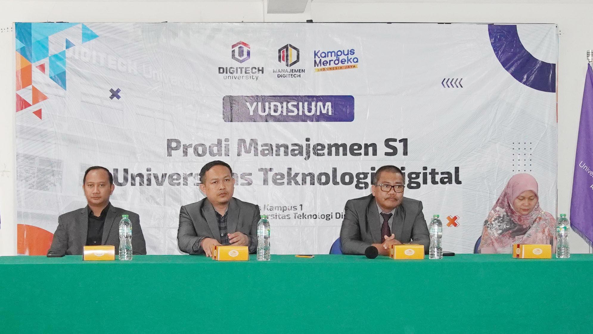
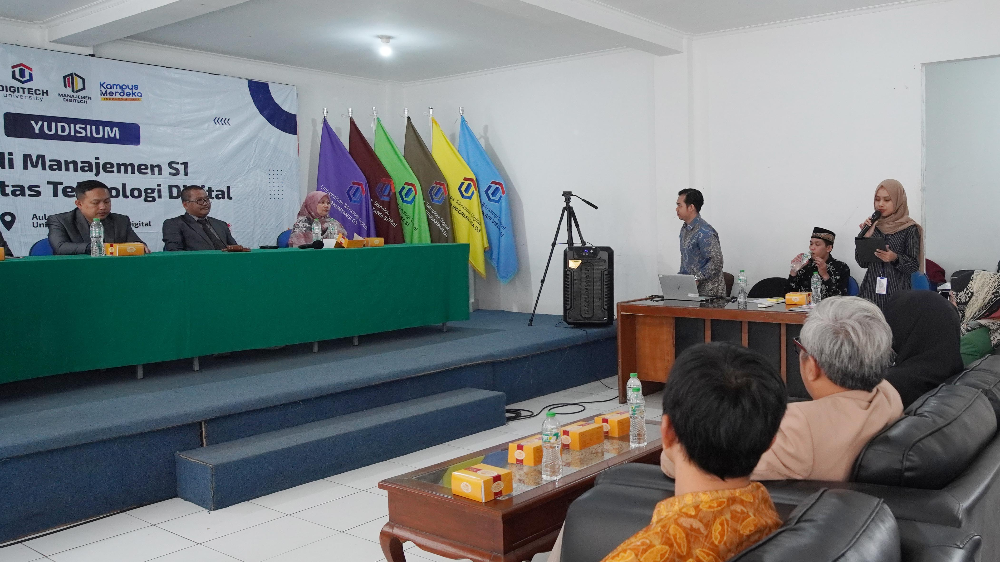
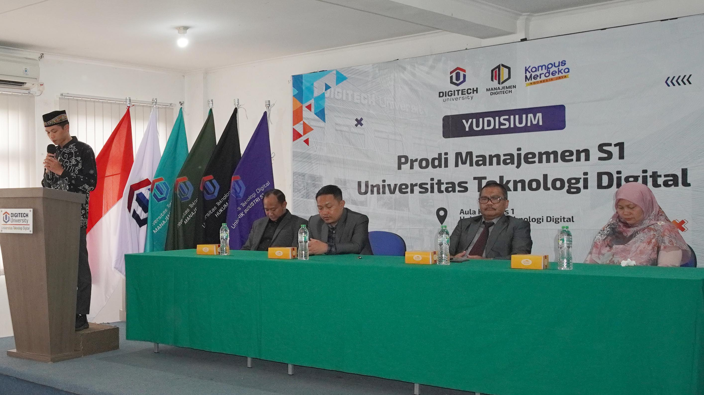
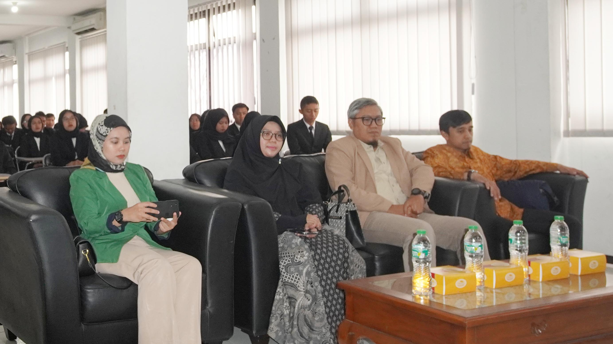
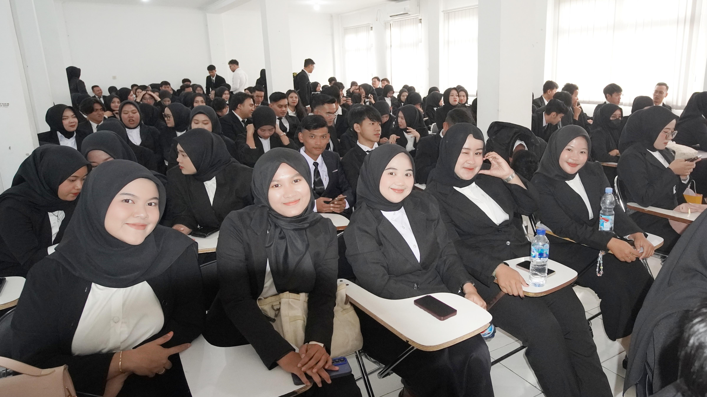
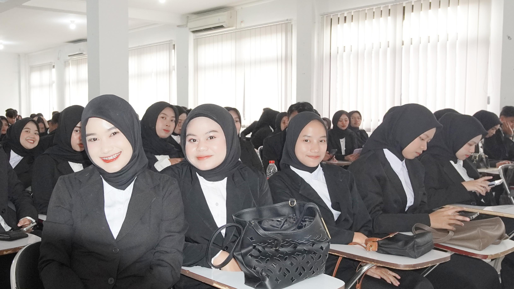
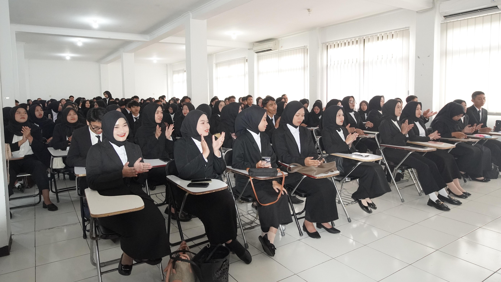
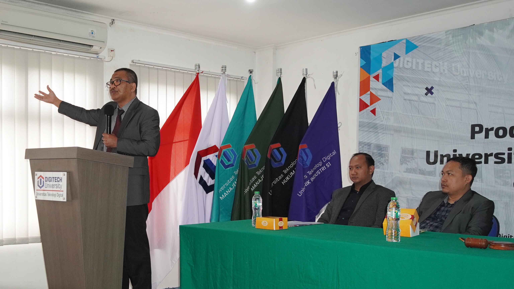
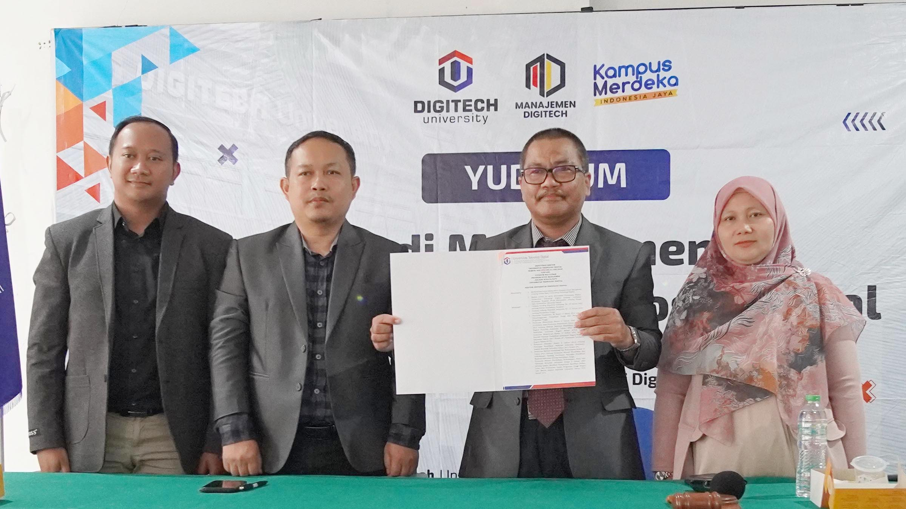
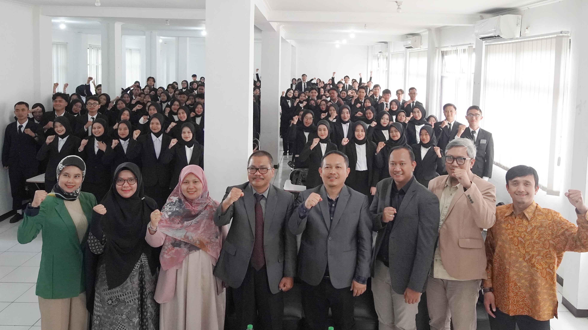

Yudisium di Universitas Teknologi Digital merupakan salah satu momen penting dalam perjalanan akademik mahasiswa. Pada tahap ini, pihak universitas secara resmi mengumumkan kelulusan mahasiswa setelah melalui proses evaluasi akademik yang panjang. Bukan hanya sekadar acara formal, yudisium adalah penegasan bahwa seluruh perjuangan, kerja keras, dan doa yang telah dipanjatkan selama masa perkuliahan akhirnya membuahkan hasil.
Lebih dari sekadar pengumuman, yudisium juga menjadi simbol transisi. Mahasiswa Universitas Teknologi Digital yang sebelumnya berstatus sebagai peserta didik kini siap melangkah ke tahap baru, baik untuk melanjutkan studi yang lebih tinggi maupun terjun langsung ke dunia kerja. Pada momen ini pula, setiap mahasiswa belajar arti tanggung jawab yang lebih besar karena ilmu yang diperoleh di bangku kuliah kini harus bermanfaat bagi masyarakat.
Selain itu, yudisium juga menjadi ajang refleksi diri. Mahasiswa Universitas Teknologi Digital dapat mengenang kembali perjalanan panjang yang penuh suka dan duka: mulai dari tugas menumpuk, bimbingan skripsi, hingga kebersamaan dengan teman-teman seperjuangan. Semua itu menjadi kenangan indah yang tidak akan pernah terlupakan, sekaligus pengingat bahwa setiap pencapaian membutuhkan proses dan pengorbanan.
Akhirnya, yudisium bukan hanya penutup sebuah fase, melainkan juga pembuka jalan untuk masa depan. Dengan ilmu dan pengalaman yang diperoleh di Universitas Teknologi Digital, para lulusan diharapkan mampu menjadi pribadi yang unggul, berintegritas, dan siap memberikan kontribusi nyata bagi bangsa dan masyarakat. Semoga momentum yudisium ini menjadi awal langkah yang penuh keberkahan dan kesuksesan bagi setiap lulusan.